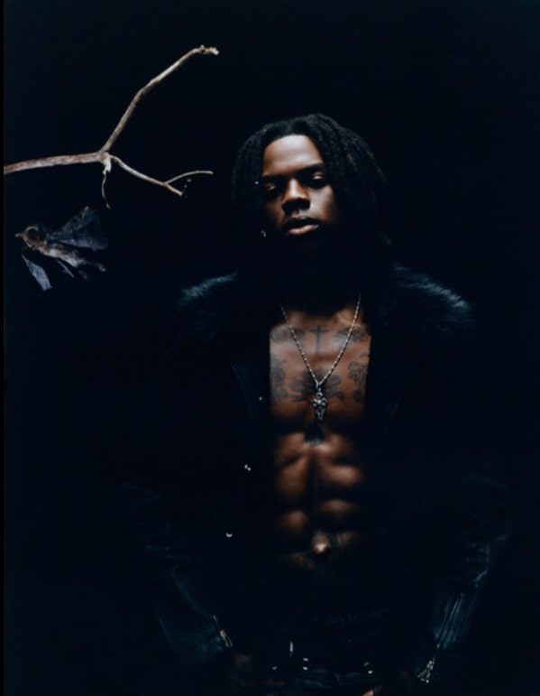

Modern-Day Afrobeats
In the 2000s and 2010s, Afrobeats experienced a significant transformation, evolving into a more polished and globally appealing sound. Artists like Wizkid, Davido and Burna Boy just to name a few have brought the genre to international audiences, blending traditional African rhythms with contemporary pop, hip-hop, and R&B influences.
Notable New-Gen Artists
-
TYLA
Tyla is a South African singer known for her smooth vocals and ability to blend Afrobeats with global music styles like R&B. She has collaborated with international artists from other genres like Drake, helping to elevate Ampiano (sub-genre of afrobeats) on the world stage.

-
Burna Boy
Burna Boy is a Nigerian singer and songwriter known for his Afro-fusion style, which combines Afrobeats with dancehall, reggae, and American rap. He has gained international acclaim and won several awards, including a Grammy.

-
REMA
Rema is a Nigerian-American singer and songwriter known for his catchy melodies and energetic performances. He has played a significant role in popularizing Afrobeats globally, collaborating with artists like Drake.

Listen to Modern Afrobeats Artists on Spotify Here!!!
Global Impact
Modern Afrobeats has had a profound impact on the global music scene, influencing artists across various genres and leading to collaborations with major international stars. The genre's infectious rhythms and catchy melodies have made it a staple in clubs and on radio stations worldwide, contributing to its rise as a dominant force in contemporary music.